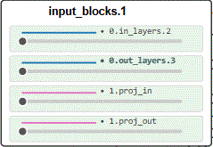

Like most sophisticated technologies, AI models are often "black boxes" that hide their complexity. But unlike many technologies that can be opened, adapted, and hacked, AI systems remain closed to most.
This demo invites you to open one of these boxes. It allows you to pick parts of the generation process behind Latent Diffusion—the core technology that powers models like Stable Diffusion. You can manipulate (or bend) key components like the U-Net, the engine that learns how to turn random noise into a cohesive image.
By bending these parts, we invite you to develop a better intuitive understanding of how these models work and to reflect on the new creative potential that these manipulations unlock.
The diagram below shows the entire latent diffusion process; click on each part to learn more about it. Click anywhere to return to start. Currently, we support manipulating the U-Net component.
The U-Net is the core neural network in the diffusion process. It takes noisy latents and predicts how to remove some of the noise at each step, guided by the text embeddings. Over many steps, this gradually shapes the noise into a clear image.
The U-Net is comprised of input, middle and output blocks which can be visualized in a U shape. Each block contains multiple layers e.g. ( _____ . 0.in_layers.2 ). The dashed lines are skip connections. During UNet training and inference, they recover fine-grained details by combining low-level features from the input/encoding blocks with high-level feature maps from the output/decoding blocks.
Bending layers of the U-Net involves transforming the outputs of a chosen layer, specifically here by rotating the layer's output by a certain angle (0°, 90°, 180°, 270°).
Bending Instructions: Click on a block to expand it. Inside the block, drag the slider of the layer you wish to bend. The more you drag the stronger the bending. Release and the layer will be unbent gradually. ↓↓

CLIP (Contrastive Language–Image Pre-training) is an AI model that learns how images and text relate by mapping them into a shared “embedding space.” Trained on millions of image–caption pairs from the internet, it can match pictures with their best-fitting descriptions or find the right text for an image. It's composed of a text encoder (text --> embedding) and an image encoder (image --> embedding).
In latent diffusion, CLIP's role is to steer the image generation process. When you provide a text prompt, CLIP's text encoder converts your words into a numerical vector (a "text embedding"). This embedding is used to condition or steer the generation towards a final image is match your text prompt.
Latents are compressed versions of images that live in a smaller “latent space.” The model works here instead of directly on pixels to make generation faster and more efficient.
Text-conditioned latents are the evolving image representations that are guided by the meaning of your text prompt as noise is gradually removed.
In the latent diffusion process, these components work together in a loop. The Scheduler acts as the planner, dividing the total number of timesteps (for example, 20) into a step-by-step itinerary for moving from pure noise to a clear image. It defines the noise level and adjustment size for each stage, balancing generation speed (fewer, larger steps) with image quality (more, smaller steps).
At each timestep, the U-Net serves as the noise predictor. It looks at the current noisy latent image, along with the text guidance (from the text encoder, often based on CLIP), and predicts which parts of the image are noise.
The Sampler is the executor (e.g., DDIM, DPM-Solver, Euler). It combines the U-Net’s noise prediction with the Scheduler’s plan to perform the actual math that removes noise and moves the latent image closer to clarity.
This loop repeats until the final image emerges from the noise.
Text embeddings are the numerical representations of your prompt that tell the model what kind of image to create.
Latent seed noise is the random starting pattern in latent space. The seed number determines the initial noise and affects the final image output. In the case of image to image generation (e.g., transforming a sketch to a detailed image), this is replaced by the result of passing an input image to the VAE to obtain an initial latent.
The Variational Autoencoder (VAE) converts between latent space and image space. It encodes images into latents and decodes latents back into viewable images.